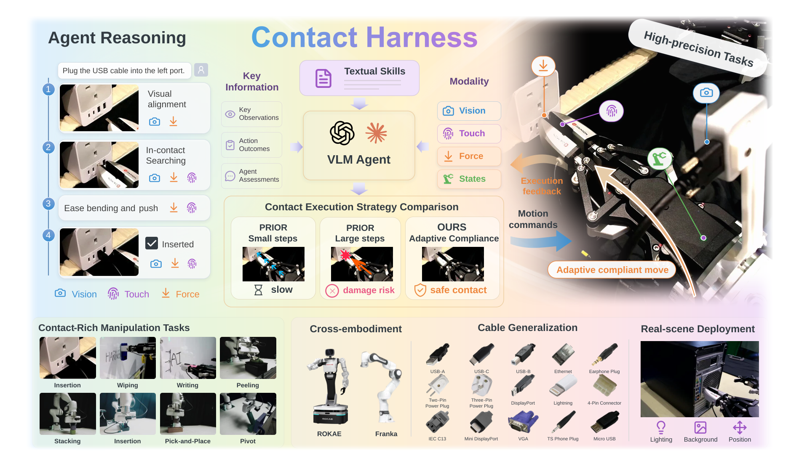
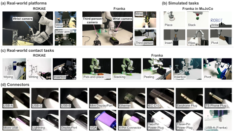

Method
Frozen VLM reasoning with textual skills and compliant execution. No model fine-tuning.

The contact loop.
Multimodal feedback guides each decision while force feedback regulates motion.

Experimental setup
One harness across Rokae, Franka, and a simulated Franka in MuJoCo.
